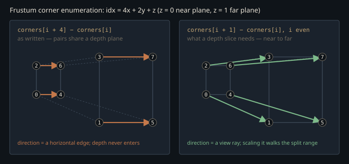

Monograph · Tree · ← Module hub · CSM shadows
deferred
CSM shadows
Cascade split, depth array, unjittered camera.
The path that only runs when ray tracing is off
`CSMPass` is the deferred pipeline's fallback sun shadow: a real render-graph pass that allocates a `D32_SFLOAT` image with one 2048² array layer per cascade, renders depth from the light into each layer in turn, and hands the array view plus a cascade UBO to the lighting pass.
static constexpr uint32_t SHADOW_MAP_SIZE = 2048;ohao/render/deferred/csm_pass.hpp:17The pass is recorded only when RT shadows are not. `DeferredRenderer` decides before building the graph whether they trace this frame — the RT shadow technique initialised (the device has ray queries), the scene has a TLAS, and some light casts shadows — and adds `csm` only when they do not:
if (m_csmPass && !rtShadows) {ohao/render/deferred/deferred_renderer.cpp:260The lighting shader consults the map only when no RT visibility is bound. `DeferredLightingPass::execute` zeroes the flag word every frame and rebuilds it from the currently bound views: an RT visibility view sets bit 5, and only its absence lets the CSM array view set bit 2. `DeferredRenderer` clears the RT view before recording the graph and hands it back only from an RT shadow pass whose `render()` actually traced; `setRTShadowMask` just stores the view.
if (!m_lightingPass || !m_rtShadow->rendered()) return;ohao/render/deferred/deferred_renderer.cpp:320m_params.flags |= 4; // CSM fallback (bit 2)ohao/render/deferred/deferred_lighting_pass.cpp:183So on an RT-capable device with a shadow-casting light this page's map is never drawn: it shadows frames on devices without ray queries and scenes without a TLAS. That is why the cascade-pairing defect below has survived — the default configuration never exercises this path.
Where to cut the frustum
A single directional shadow map spends its texels uniformly in *world* space while the camera needs them uniformly in *screen* space: the near field is starved, the far field wasted. Cascades cut the view frustum along depth and give each slice its own full-resolution map. OHAO places the cuts with the practical split scheme (Zhang et al. 2006), blending a perspective-correct logarithmic split with a uniform one:
Here $n$ and $f$ are the camera near and far planes, $N = 4$ is the cascade count, $i \in [1, N]$ indexes the split, and $\lambda$ weights logarithmic against uniform. The logarithmic term is what the projective mapping actually wants; the uniform term exists because pure log placement collapses the first split onto the near plane whenever $n$ is small.
float d = m_splitLambda * log + (1.0f - m_splitLambda) * linear;ohao/render/deferred/csm_pass.cpp:498`setSplitLambda`'s only caller is a smoke test in `renderer_pipeline_tests.cpp` — a file no `CMakeLists.txt` builds — and it re-sets the value the constructor already holds, so $\lambda$ is 0.95 in every frame the engine renders.
csm.setSplitLambda(0.95f);tests/renderer/renderer_pipeline_tests.cpp:324float m_splitLambda{0.95f}; // 0.95 = mostly logarithmicohao/render/deferred/csm_pass.hpp:95With the renderer's defaults of $n = 0.1$, $f = 1000$ the log term alone puts the first split at 1 m. Evaluating the full formula gives splits near 13.5, 34.5, 132.5 and 1000 units — the 5 % uniform share does all the work at the near end, which is why $\lambda$ is not 1.
Stabilising the cascade
The classic cascade artifact is *swimming*: rotate the camera one degree and every shadow edge crawls, because the light's projection was re-fit to a slightly different region and the depth samples landed on different texels. OHAO kills this in the standard two steps. It bounds each slice with a sphere rather than a box, then quantises the light view's translation to whole shadow texels — computing texels-per-world-unit from the sphere and rounding the light-space origin onto that grid.
float texelsPerUnit = static_cast<float>(SHADOW_MAP_SIZE) / (radius * 2.0f);ohao/render/deferred/csm_pass.cpp:566A tight AABB wastes fewer texels, but its extents change as the camera yaws, so the projection scale changes every frame and no amount of snapping stabilises it. A bounding sphere's radius is invariant under rigid rotation of the corner set: the scale is fixed for a given slice, leaving only translation — which is exactly what snapping can quantise away. Wasted map area is the deliberate price.
The pairing that flattens the split
The slice geometry is built by unprojecting the eight NDC corners of the frustum and walking each near-plane corner toward its far-plane partner by the split fractions. The corners are enumerated by a nested `x, y, z` loop with `z` innermost, so the index is $4x + 2y + z$ — near and far partners are *adjacent* (0↔1, 2↔3, …). The interpolation loop instead pairs `i` with `i + 4`:
glm::vec3 dist = frustumCorners[i + 4] - frustumCorners[i];ohao/render/deferred/csm_pass.cpp:546Index `i` and `i + 4` differ in the *x* bit, not the depth bit: the direction being scaled is a horizontal edge of the near (or far) plane, and the frustum's depth extent never enters the interpolation.

Far-plane corners therefore stay at the far plane for every cascade, so every sphere has to enclose almost the whole view frustum. Evaluating the shipped formula for a 45° vertical FOV, 16:9 camera at the default near and far gives cascade radii of roughly 749, 745, 752 and 946 units — the first three within 1 % of each other, the last only a quarter larger, where the near-to-far pairing would give 13, 31, 122 and 950. Cascade 0's texel footprint is 73 cm rather than 1.3 cm — the split scheme is computed correctly, then discarded by the geometry it feeds. Numbers from the formula, not from a capture.
Three biases stacked against acne
Shadow acne comes from a receiver sampling its own depth across a texel of finite size. The pass attacks it three ways at once. Front-face culling makes the recorded depth the *back* of each occluder, moving self-shadowing error to the far side:
rasterizer.cullMode = VK_CULL_MODE_FRONT_BIT; // Front-face culling for shadowohao/render/deferred/csm_pass.cpp:409A hardware constant-plus-slope bias adds the term that matters at grazing sun angles, scaling with the polygon's slope in light space:
rasterizer.depthBiasSlopeFactor = 1.75f;ohao/render/deferred/csm_pass.cpp:413The lighting shader then subtracts a further constant `shadowBias` (0.012 by default in the C++ `CascadeData`). Front-face culling is the strong lever and it has a real price: single-sided geometry — foliage cards, a ground plane with no underside — has no back face to record and casts no shadow at all, while thin closed objects peter-pan. The `normalBias` and `cascadeBlendWidth` fields the C++ struct fills are read by nothing in the shipping shader.
The depth convention, set per matrix
`GLM_FORCE_DEPTH_ZERO_TO_ONE` is not defined anywhere in this repository, so GLM's default projections are OpenGL-convention, with NDC depth in $[-1, 1]$. Vulkan clips against $0 \le z_c \le w_c$ and the lighting shader rejects any `projCoords.z` below 0 as "lit", so a $[-1, 1]$ light projection would leave the near half of every cascade — the half holding the occluders closest to the light — unshadowed. The light's orthographic projection therefore names the Vulkan range explicitly, with GLM's `_ZO` variant:
glm::mat4 lightProj = glm::orthoRH_ZO(-radius, radius, -radius, radius, 0.0f, radius * 2.0f);ohao/render/deferred/csm_pass.cpp:586The frustum-corner unprojection makes the matching assumption, using NDC $z \in \{0, 1\}$ with a comment asserting the Vulkan range. Depth clamping stays on, which disables z-plane clipping and flattens any occluder in front of the cascade's near plane onto depth 0 instead of dropping it:
rasterizer.depthClampEnable = VK_TRUE; // Clamp depth to [0, 1]ohao/render/deferred/csm_pass.cpp:406Defining the GLM macro globally instead would change every camera projection in the engine at once — a repo-wide change, not a one-line edit — so the cascade matrix carries its own convention.
The sampler that ships
There is no CSM sampling include: what runs is written directly into the deferred lighting shader, which defines its own `selectCascade` over the live UBO and its own 3×3 box PCF over nine taps — no Poisson disk, no normal bias, no cascade blend:
float calculateShadowCSM(vec3 fragPos, float viewDepth) {shaders/core/deferred_lighting.frag:141Each tap is a hardware depth comparison. The cascade array is declared `sampler2DArrayShadow` and bound with the pass's comparison sampler (`compareEnable`, `VK_COMPARE_OP_LESS_OR_EQUAL`, white border), so `texture()` with a `vec4(uv, layer, reference)` returns 1 where the biased reference depth is at or in front of the stored one; with linear filtering the driver may blend the four comparisons of a tap.
layout(set = 0, binding = 6) uniform sampler2DArrayShadow shadowMap;shaders/core/deferred_lighting.frag:41samplerInfo.compareOp = VK_COMPARE_OP_LESS_OR_EQUAL;ohao/render/deferred/csm_pass.cpp:258One render pass per cascade
The raster side is the plain multi-pass form of layered rendering. `createShadowMap` builds, besides the `2D_ARRAY` view the lighting shader samples, one single-layer `2D` view per cascade, and `createFramebuffers` wraps each in its own one-layer framebuffer:
framebufferInfo.layers = 1;ohao/render/deferred/csm_pass.cpp:303`CSMPass::execute` loops over the four cascades, begins the depth-only render pass on that cascade's framebuffer, and redraws every `RenderScene` draw. Nothing routes primitives to a layer: the framebuffer already *is* the layer. The pipeline therefore has a vertex stage and nothing else — no geometry shader, no fragment shader — and the vertex shader projects straight into the cascade being rendered. The object's world matrix is not pushed per draw; it is read from `RenderScene`'s instance table, indexed by the draw's `firstInstance`, which the pass sets to the instance slot:
gl_Position = pc.viewProj * instances[gl_InstanceIndex].world * vec4(inPosition, 1.0);shaders/shadow/shadow_csm.vert:29The instance table is the pipeline's only descriptor set: one set per frame slot, holding the storage buffer, rewritten each `execute` because the table buffer can be replaced when it grows. The cascade's matrix travels as a single push constant, pushed once per cascade rather than once per draw, from the `m_cascadeData` the same `execute` just recomputed:
const ShadowPushConstant push{m_cascadeData.viewProj[cascade]};ohao/render/deferred/csm_pass.cpp:163The cascade matrix is the only thing that changes between the four passes, so it is the only thing that needs to ride in the command buffer: 64 bytes, half of the 128-byte push-constant size every Vulkan device must support, pinned by a `static_assert`. Everything per-object lives in the instance table, which the G-buffer pass reads too, so the shadow raster and the main view cannot disagree about where an object is. A single-pass layered variant (a geometry shader or `gl_Layer` from the vertex stage broadcasting to all four layers) would cut the draw count by four, but needs a layered framebuffer and either a GS stage or `shaderOutputLayer`; at four cascades the plain loop is the portable choice.
static_assert(sizeof(ShadowPushConstant) == 64);ohao/render/deferred/csm_pass.hpp:105The same matrices also go to the *sampling* side: `execute` memcpys `m_cascadeData` into the persistently-mapped cascade UBO, and `DeferredRenderer` hands that buffer to the lighting pass, where binding 12 feeds `calculateShadowCSM`.
m_lightingPass->setCascadeBuffer(m_csmPass->getCascadeBuffer());ohao/render/deferred/deferred_renderer.cpp:59The render pass leaves every layer in `DEPTH_STENCIL_ATTACHMENT_OPTIMAL`; the move to a shader-readable layout before lighting is the render graph's barrier, which covers all four array layers rather than layer 0 alone.
Contracts
- `setCameraData` must receive the **unjittered** projection. `DeferredRenderer` passes `m_proj` while the GBuffer pass gets `jitteredProj`; a jittered matrix would nudge every cascade sphere each frame and defeat the texel snapping.
- The lighting shader applies CSM only to lights of type 0 (directional) and only when flag bit 2 is set. Point and spot lights are unshadowed on this path.
- The cascade UBO is a single persistently-mapped allocation written from `execute()` with no per-frame ring buffer, so the *lighting* read of an earlier frame still in flight can see the matrices the CPU wrote for a later one. The shadow raster is immune: it takes its matrix from a push constant recorded into its own command buffer, and its instance-table set is per frame slot.
- The shadow sampler is created with `compareEnable = VK_TRUE` and `VK_COMPARE_OP_LESS_OR_EQUAL`, and binding 6 must stay a `sampler2DArrayShadow` sampled with a reference depth: Vulkan requires a compare-enabled sampler to be used only with depth-compare instructions.
- The light projection must keep producing depth in $[0, 1]$ (`orthoRH_ZO`); a $[-1, 1]$ matrix leaves the near half of every cascade unshadowed with no error anywhere.
- The `csm` pass is recorded only in frames where RT shadows do not run; anything that wants the map in an RT frame gets one that was not drawn this frame.
Source files
ohao/render/deferred/csm_pass.hppohao/render/deferred/deferred_renderer.cppohao/render/deferred/deferred_lighting_pass.cppohao/render/deferred/csm_pass.cpptests/renderer/renderer_pipeline_tests.cppshaders/core/deferred_lighting.fragshaders/shadow/shadow_csm.vertshaders/includes/shadow/shadow_csm.glslpath noteParent hub for the full pipeline narrative; this page is the file-level design unit. Sitemap · hover glossary terms anywhere.